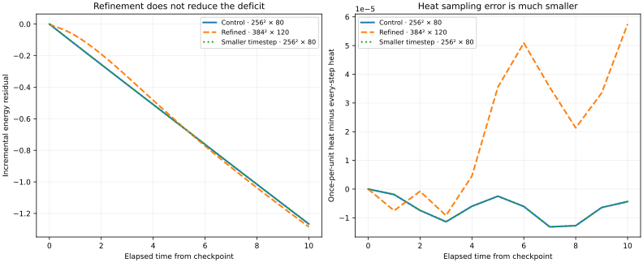

Completed short diagnostic tests · 24 November 2026 · t=200–210
Refinement does not resolve the energy deficit
The control, finer-grid and smaller-timestep branches all completed. The reconstructed total-energy deficit remains about 25% of bottom heat input over this ten-unit window. More frequent accounting of the prescribed heating and cooling makes a negligible difference.
Download the Markdown report for GregNumerical summaryTested source
| Test | Grid | Maximum Δt | Residual / bottom heat |
|---|---|---|---|
| Control | 256² × 80 | 1/120 | −25.3349% |
| Refined | 384² × 120 | 1/180 | −25.7081% |
| Smaller timestep | 256² × 80 | 1/180 | −25.3356% |
Interpretation: this does not support a simple resolution or timestep remedy. It does not identify the cause or prove an asymptotic convergence result. The energy diagnostic has not been verified as the exact discrete invariant of this potential-temperature formulation. Numerical source/work accounting remains to be audited.
What is being compared?
All branches use the same developed compressible state at t=200: Ω=3, β=0, no jet, WENO9 and no explicit closure. The domain is 4 × 4 × 1, horizontally periodic, with bottom heating and local cap cooling. These are short budget tests, not new long-time LSV experiments.
The measured residual is R = E(t) − E(t₀) − ∫P dt, with internal, gravitational and staggered kinetic energy in E. P includes bottom heating, cap cooling and top conductive exchange. Negative R means less reconstructed energy accumulated than the prescribed net input predicts. Gross bottom heat during the window is 5; control R=−1.26675.

After excluding the first two time units, the fitted deficit rates remain 25.28%, 27.60%, and 25.28% of bottom power. Once-per-unit versus every-step heat integration differs by at most 5.75×10⁻⁵ at the shared samples, compared with residuals of order 1.27.
Fine-grid transfer reduced initial kinetic energy by 3.87% and changed total energy by −0.09567. The fine-grid ledger starts after that change; it is not counted in the reported residual. Subsequent adjustment is a limitation. The earlier 16% figure was cumulative through t≈134, not this t=200–210 interval.
Vorticity at three depths
Rows: control, refined grid, smaller timestep. Columns: near 20%, 50%, and 90% of box depth; each panel labels its actual height. Positive ζ/f₀ is cyclonic. The same fixed asinh scale is used across all rows, depths and times.
21 saved states, spaced by 0.5 time unit; seven seconds at 3 frames/s. This short interval does not establish inverse transfer or mature vortex selection.
Absolute tracer concentration
The same rows and depths, with a fixed contrast scale centered at C=0.1. Panel labels include the instantaneous mean and RMS variation. There is no framewise rescaling or mean subtraction.
Records and limitations
All three successful jobs passed CPU and GPU restart/output checks, remained positive in density and temperature, and kept mass error below 3.4×10⁻¹⁶. Their peak sampled Mach numbers were below 0.20. These stability checks do not establish energy closure.
Completed allocations: 13m22s, 28m41s, and 13m52s including validation/startup. The earlier submission stopped in the small GPU check because the new heat-budget averaging operation was incompatible with GPU arrays; it produced no full-size test results. That diagnostic was repaired before these successful runs.
Control diagnosticsRefined diagnosticsSmaller-timestep diagnosticsTransfer auditMovie scales and hashes